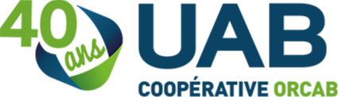
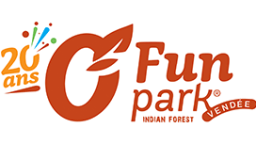

Développeur fullstack
Stage durant lequel j'ai refait une page intranet de la coopération dans le but de corriger une faille de sécurité. Pour cela j'ai utilisé HTML,CSS, PHP et le protocole FTP.

Opérateur sauts de l'extrême
Travail saisonnier en tant qu'opérateur sauts de l'extrême. J'ai animés les différents sauts du parc en m'assurant de la sécurités des sauteurs. Cette expérience m'a permis d'affiner ma rigueur et mon aisance à l'oral.
Card title
Some quick example text to build on the card title and make up the bulk of the card's content.


End of content...